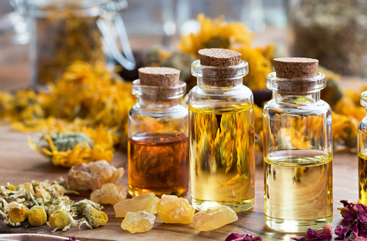

What Are Essential Oils?
What are essential oils? Essential oils are the essence of a plant, a gift from the earth, distilled and prepared for you to bring the power of nature into your home.
Essential oils give a plant its scent, protect it from hazardous environmental conditions, and even assist it with pollination, among other important functions and benefits.
How Do Essential Oils Work?
When you open a bottle of pure, unadulterated essential oil, your senses are instantly filled with its potent aroma, even from a distance. What your nose detects are the naturally occurring elements of the essential oil.
Every essential oil varies in its natural makeup, so aromas and benefits are also unique. For example, Lavender oil includes elements that make it effective for soothing skin irritations, and promoting a restful environment for sleep.
Use Essential Oils to Transform Your Life
So many of the products we use in our day-to-day lives are filled with
synthetic chemicals. These unnatural products can weigh us down and even
negatively influence the way we think, feel, and live.
Pure
essential oils offer an alternative to synthetic products. Essential
oils are more than just natural products. Each with a unique chemical
makeup, essential oils have dozens of benefits. Essential oil benefits
are determined by the chemistry of the plants. If these natural
chemicals are properly extracted, they can be used to help you in your
daily life.
Essential Oil Uses and Benefits
Essential Oils Aren't a New Trend
Do you feel like you've started to hear a lot about essential oils in the last few years? While you might think essential oils are a new, hip trend, plant extracts and plant-based products are deeply rooted in the traditions of the past.
From ages to ages
Essential oils have been used by ancient civilizations across the globe for:- Aromatherapy
- Personal care
- Emotional therapy
- Healthcare practices
- Religious ceremonies
- Beauty treatments
- Food preparation
What Are Essential Oils Used for Today?
Historically, essential oils were used as part of cultural practices and traditions. However, we now have increasing scientific evidence and research showing that essential oils can be effectively and safely used in a wider range of day-to-day practices and routines for amazing benefits. Today, essential oils can be used for cooking, household cleaning, personal hygiene, and much, much more.*
When you use essential oils, you'll have more natural solutions and fewer toxic, synthetically manufactured products in your life and home.
What Makes Essential Oils Effective?
Essential oils are
-
Calm
- Soothing
- Grounding
- Energizing
- Warming
- Renewing
but all essential oils are natural. The variety of essential oils allows you to naturally and effectively address your specific concerns.
With so many essential oils available, you can tailor them to your specific wants and needs rather than be forced to settle for a generic solution. This makes essential oils a popular choice for those looking for the best natural solutions in the modern era. The verstaility of essential oils is part of what has made them so popular in recent years. People love that they can use essential oils for a variety of tasks, without having to buy multiple products.
How to Use Essential Oils
How do you use essential oils effectively? Rest assured that you don’t have to be an expert to enjoy the wide array of benefits that essential oils offer. All you really need is a basic understanding of how to apply essential oils safely and simply as part of your daily routine.
If you’re ready to learn more, we can show you how to use essential oils. Once you learn how to use essential oils, you’ll be on your way to a healthier lifestyle.